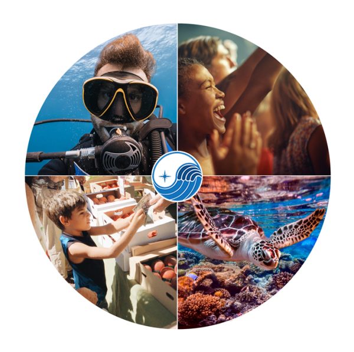

Making diving accessible to everyone!
Saving turtles
Planting corals
Restoring corals

Hunting Invasive species
Our Mission

Our fund is dedicated to advancing both Ecological and Humanitarian Scuba Diving efforts at sea. Our community of scuba divers organizes ecological-friendly music festivals and farmer’s markets at a local beach to raise funds for an initiative close to our heart; adding “more fins in the water” to multiply current Coral Reef Restoration, Piier/Reef Cleanups, Shark Tagging, Lion Fish Hunting etc as well as funding Disabled Scuba Diving at sea. We call this popular event EcoPalooza™!
Eco Palooza

Join the Mother Ocean Fund team and a whole host of passionate scuba divers as we come together to heal Mother Ocean. This unique event isnt just about diving its about celebrating our community and having a great time while making a real difference.
Restoring ecosystems

EcoPalooza features something for everyone, including a fantastic farmers market where you can sample local produce, as well as live music that will have you dancing the day away on the beach. But that’s not all – every dollar raised at EcoPalooza goes towards adding more fins in the water, helping to advance current Ecological & Humanitarian Scuba Diving efforts at sea.
What are you waiting for...
Anyone can do it
The Mother Ocean Fund is a growing force in environmental and humanitarian stewardship, and we’re proud to bring people of all ages together through advocacy, education, conservation awareness, and celebration!
Take action
So come join us for a day of fun, community, and making a real difference. See you at EcoPalooza!


Help out today
Our purpose is to help Mother Ocean heal while raising awareness of varied Ecological Diving and providing disabled divers the access needed to use Scuba Diving as a means of physical and mental therapy, for their injuries and/or ailments.
Donate
About
We’re a community of Aquatic Super Heroes, inspired by a collective passion for cleaning up, restoring damaged or decaying coral, protecting and preserving our Mother Ocean, beaches, reefs, and native habitats.
Services
- Coral Reef Restoration
- Reef Clean Up's
- Lion Fish Hunting
- Turtle Rescue
- Scuba Therapy for Adaptive Divers
- Shark Tagging
- Education
Contact
101425 Overseas Highway #115 Key Largo, Florida 33037.
info@motheroceanfund.org
Copyright © 2023 Mother Ocean Fund